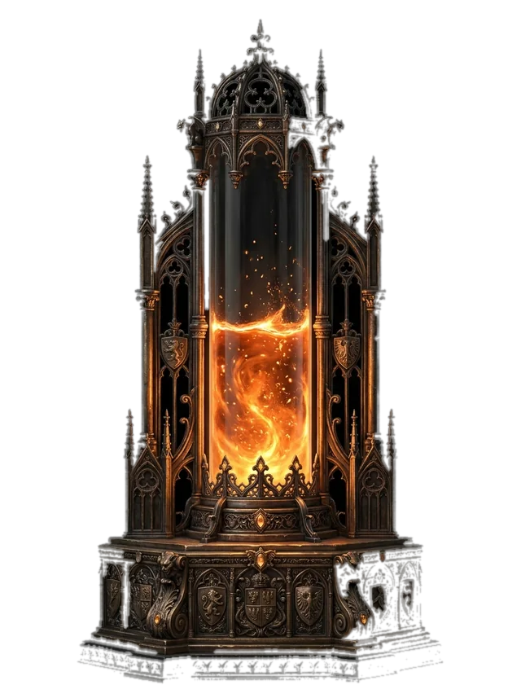
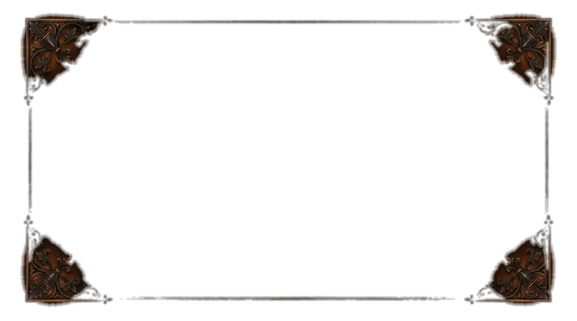

Sample artOffering altar
IdleExample URL · not live: http://localhost:4821/fixture-not-live/offering-altar
Hold to add this visual as a browser source in OBS.
On stream · deliver each visual to OBS as a local browser source. Simulated
Choose an existing scene in OBS. Hold to add a transparent browser source, then inspect its placement in OBS.
Simulated setup · no OBS source will be created.
Beacons visuals and the aggregate-only Gatehouse vote bar use the size above. Lot plates become available after a sealed draw. Configure visuals in Beacons.

Sample artExample URL · not live: http://localhost:4821/fixture-not-live/offering-altar
Hold to add this visual as a browser source in OBS.

Sample artExample URL · not live: http://localhost:4821/fixture-not-live/gilded-frame
Hold to add this visual as a browser source in OBS.
Example URL · not live: http://localhost:4821/fixture-not-live/hype-border
Hold to add this visual as a browser source in OBS.
Available after a sealed draw. Open the Lot Chamber for its on-stream plate.